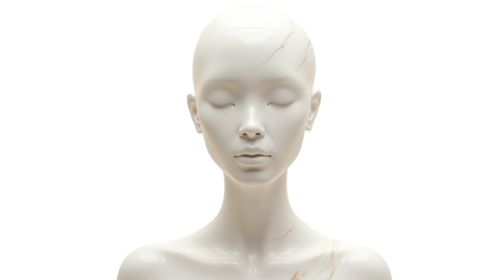
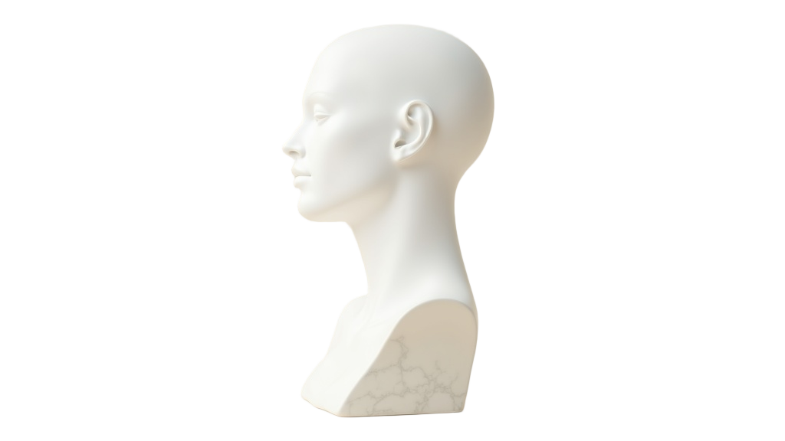

Founder of Bio Green Elixirs. Creating products, stories and experiences people remember.
Every brand starts as a cloud of possibilities.
BIO N:OV — a fermentation-science supplement brand, built from zero and taken global.